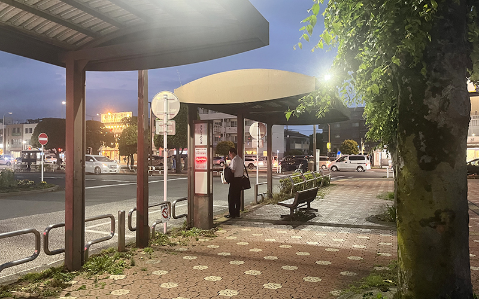
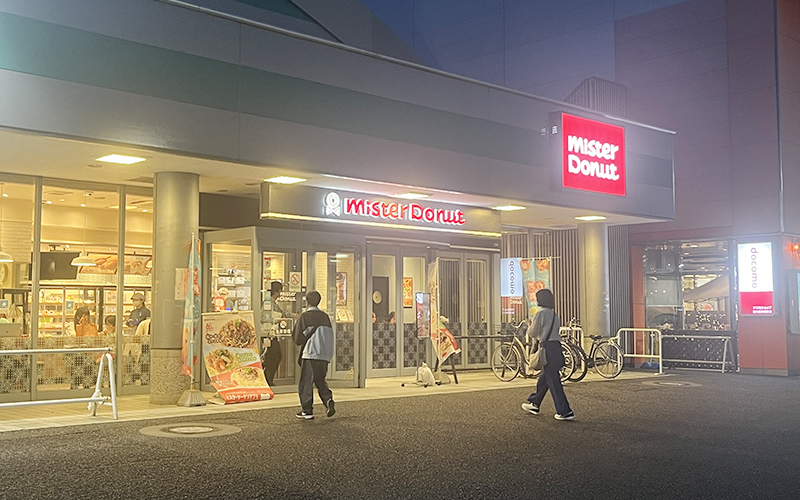
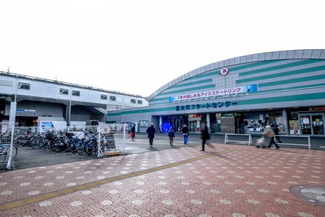

おすすめポイント


01
タクシーが常に
停まっている
駅には常に数台のタクシーが停まっていて、学校までの乗車時間は7分程度で金額は1,100円でした。帰りはタクシーを呼ぶだけで400円かかりますが、スクーリングは体力勝負でもあるので、行きは楽だったのでおすすめです。
02
7:00から空いてる
ミスドがある
駅前にはミスタードーナツがあり、朝7:00から空いているのでお昼用に買うのもおすすめです。


03
スケートリンクがある
大人1,800円でスケートを楽しむことができます。スクーリング後に元気が残っている方、経験者の方にはおすすめです。
迎車料金のかからない朝は東大和市駅からタクシーがおすすめです。
朝起きる時間が遅くなる方も多いと思います！
朝起きる時間が遅くなる方も多いと思います！
TOP